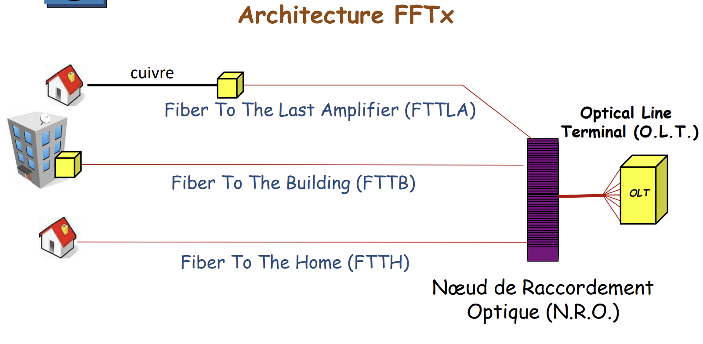

Spécifique au parcours Réseaux Opérateurs et Multimédia — gestion des infrastructures opérateurs en 2ème année.
AC24.01ROM : Administrer les réseaux d'accès fixes et mobiles.
Introduction : Assurer la connexion finale de l'abonné au réseau de l'opérateur — le « dernier kilomètre » — est au cœur du métier ROM. Cette compétence recouvre aussi bien les technologies optiques que cuivrées qui constituent les réseaux d'accès fixes, ainsi que les architectures radio pour le mobile.
Dans le cadre du module R3.07 « Réseaux d'accès », j'ai étudié en détail les deux grandes familles de technologies déployées sur le réseau d'accès fixe. Côté optique, j'ai analysé les architectures FTTx (Fiber To The Home, Building, Cabinet) reposant sur des équipements OLT (Optical Line Terminal) côté opérateur et des ONU/ONT côté abonné, interconnectés par des réseaux PON (Passive Optical Network) qui mutualisent la fibre sans équipements actifs intermédiaires. Côté cuivre, j'ai étudié le rôle du DSLAM (Digital Subscriber Line Access Multiplexer) dans l'agrégation des accès xDSL, en distinguant les différentes variantes (ADSL2+, VDSL2) selon la distance à la prise abonné.
La SAÉ 3.03 « LAN » a mis en pratique cette compétence : les routeurs de bordure CE-1 et CE-2 symbolisent les équipements de terminaison côté client, connectés à un réseau WAN opérateur via le segment 172.16.20.0/29, illustrant concrètement la frontière entre le réseau d'accès et le cœur de réseau de l'opérateur.

[ CAPTURE À AJOUTER : Script d\'automatisation router.py ou configuration initiale ] Chemin : images/but2prog/ac1.1.png
'" />
R3.07 : Réseaux d'accès
SAÉ 3.03 : LAN
AC24.02ROM : Virtualiser des services réseaux.
Introduction : Les opérateurs remplacent progressivement le matériel dédié coûteux par des fonctions logicielles plus agiles — c'est le principe du NFV (Network Functions Virtualization). La maîtrise des outils de conteneurisation et d'orchestration est désormais incontournable dans ce domaine.
Le module R4.ROM.09 « Outils DevOps » m'a permis de prendre en main les outils concrets de cette transformation. J'ai travaillé avec Docker pour créer, déployer et gérer des conteneurs applicatifs. Dans le cadre des TP Docker-compose (TP2), j'ai appris à décrire des stacks de services interconnectés via un fichier docker-compose.yaml, en définissant des dépendances entre services (clé depends_on), des volumes persistants et des variables d'environnement. J'ai ainsi déployé des piles complètes incluant un serveur web Apache/httpd, une base de données MySQL et une interface d'administration Adminer.
J'ai ensuite construit mes propres images Docker à l'aide de Dockerfiles personnalisés, en utilisant les instructions FROM, RUN, COPY, EXPOSE et CMD pour créer une image d'application Flask exposée sur le port 8080. Ces conteneurs incarnent directement le concept de NFV : ce sont des fonctions réseau ou applicatives entièrement logicielles, instanciables et configurables dynamiquement. Le TP3 Ansible a prolongé cette démarche en automatisant le déploiement de ces conteneurs Docker sur des hôtes distants via des playbooks YAML.
R4.ROM.09 : Outils DevOps
SAÉ 3.02 : Développer des applications communicantes
AC24.03ROM : Décrire et comprendre l'architecture et les offres des opérateurs.
Introduction : L'Internet mondial est un maillage complexe d'accords techniques et commerciaux articulé autour de réseaux d'accès, de collecte et de transport (backbone). Comprendre la topologie de ces infrastructures et les protocoles qui les régissent est indispensable pour appréhender les offres de connectivité des opérateurs.
Le module R3.02 « Réseaux opérateurs » m'a permis d'assimiler le fonctionnement du cœur de réseau et le routage inter-AS (Autonomous Systems). J'ai étudié le protocole de routage BGP (eBGP/iBGP), basé sur un vecteur de chemin (path vector), qui permet aux opérateurs d'échanger des tables de routage globales ou partielles et d'appliquer des politiques de trafic complexes via la manipulation d'attributs (AS-Path, Local Preference, MED). J'ai également analysé et configuré l'architecture MPLS (MultiProtocol Label Switching) de niveau 2.5, qui substitue le routage IP traditionnel par une commutation rapide d'étiquettes grâce au protocole LDP (Label Distribution Protocol) et aux opérations de PUSH, SWAP et POP sur les routeurs de bordure (PE/LER) et de cœur (P/LSR). Pour répondre aux besoins d'interconnexion multi-site sécurisée des entreprises, j'ai mis en œuvre des offres MPLS-VPN de niveau 3. Ce service repose sur l'isolation des flux par des tables de routage virtuelles (VRF), l'unicité des préfixes via les Route Distinguishers (RD), le filtrage par Route Targets (RT), et l'échange de routes VPNv4 via l'extension MP-BGP en double étiquetage (label stacking).
En complément, les modules R3.06 et R3.07 m'ont apporté une maîtrise des infrastructures de la boucle locale d'accès (cuivre et optique). Côté fibre, j'ai étudié le déploiement des architectures FTTH, FTTB et FTTO, en cartographiant le réseau depuis le Nœud de Raccordement Optique (NRO) équipé d'OLT (Optical Line Termination) jusqu'à la Prise Terminale Optique (PTO/DTIO) de l'abonné. J'ai analysé l'offre de partage passif GPON (Gigabit Passive Optical Network), qui s'appuie sur des coupleurs optiques et un multiplexage en longueurs d'onde, utilisant une longueur d'onde de 1310 nanomètres pour le flux montant et une longueur d'onde de 1490 nanomètres pour le flux descendant. Pour l'accès cuivre historique, j'ai appréhendé l'infrastructure xDSL où le trafic de la paire torsadée est concentré par un DSLAM avant d'être encapsulé en PPPoE et configuré via IPCP vers le serveur d'accès large bande (B.A.S.) de l'opérateur. Enfin, j'ai été formé à la caractérisation et à la maintenance de ces liens optiques via l'inspection microscopique des connecteurs et la localisation des défauts (microcourbures, coupures) par photométrie et réflectométrie (OTDR).
R3.02 : Réseaux opérateurs
R3.06 : Technologies des réseaux d'accès optiques
R3.07 : Technologies des réseaux d'accès cuivre et hauts débits
AC24.04ROM : Gérer le routage/commutation et les interconnexions.
Introduction : Interconnecter des opérateurs à l'échelle mondiale nécessite des protocoles de routage massifs et hautement robustes. BGP et MPLS constituent la colonne vertébrale technique de l'Internet et des réseaux opérateurs.
Le module R3.02 m'a permis de mettre en œuvre des interconnexions de cœur de réseau. J'ai configuré le protocole BGP (Border Gateway Protocol) pour la gestion des annonces de routes entre différents Systèmes Autonomes, en travaillant sur les attributs AS-PATH, les préfixes annoncés et les politiques de routage (route-maps, filtrages). Ce contexte fait directement écho à l'architecture de la SAÉ 3.03, où les routeurs CE-1 et CE-2 jouent le rôle d'ASBR (Autonomous System Border Router) avec des routes statiques redistribuées vers le segment opérateur 172.16.20.0/29.
J'ai également étudié le transport de données via MPLS et la mise en place de VPN L2 et L3 pour segmenter et sécuriser le trafic des clients sur l'infrastructure mutualisée de l'opérateur. Le mécanisme de label switching MPLS, en dissociant le plan de contrôle du plan de données, permet d'assurer la séparation des flux clients tout en garantissant des performances élevées sur les liens de cœur.
R3.02 : Réseaux opérateurs
SAÉ 3.03 : LAN
AC24.05ROM : Automatiser la gestion des équipements réseaux.
Introduction : Face à des milliers de routeurs et commutateurs, la configuration manuelle n'est plus une option viable pour un opérateur. L'automatisation réseau est devenue une compétence fondamentale, à l'intersection de la programmation et de l'administration réseau.
Le module R4.ROM.09 « Outils DevOps » m'a introduit à Ansible, l'outil d'automatisation de référence dans les environnements télécom. Dans le cadre du TP3, j'ai créé des fichiers d'inventaire en syntaxe YAML pour lister les équipements cibles (routeurs Cisco sur EVE-NG, machines Linux), puis rédigé des playbooks pour automatiser des tâches variées : déploiement d'un serveur web Nginx, installation et configuration d'Apache et MariaDB via des rôles Ansible réutilisables, et sauvegarde automatique de la running-config de routeurs IOS via le module ios_command. Pour ce dernier cas, le playbook collecte la configuration avec show running-config, la stocke dans une variable via register, puis la copie dans un fichier de sauvegarde nommé dynamiquement grâce à la variable magic inventory_hostname.
J'ai aussi configuré des équipements réseau Cisco directement depuis Ansible via le module ios_config, en définissant des parents (le mode de configuration IOS) et des lignes de commandes à appliquer — par exemple l'adressage IPv4 d'une interface ethernet ou la création d'un VLAN avec affectation de ports. Cette logique est directement transposable à la gestion industrielle de flottes d'équipements opérateurs.